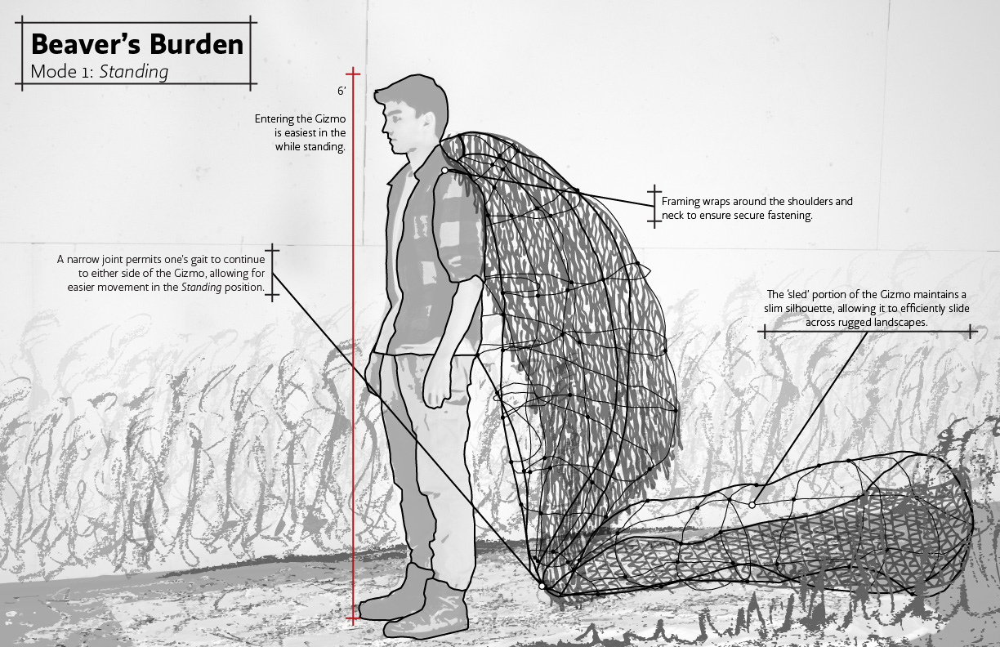

Beaver's BurdenArchitecture, sustainability, and ecological resilience.
I study Sustainable Design at the University of Illinois. My work sits where built environments meet natural systems.
 3 Little Pigs Wall Assembly
3 Little Pigs Wall Assembly
 Mylo To-Go
Mylo To-Go